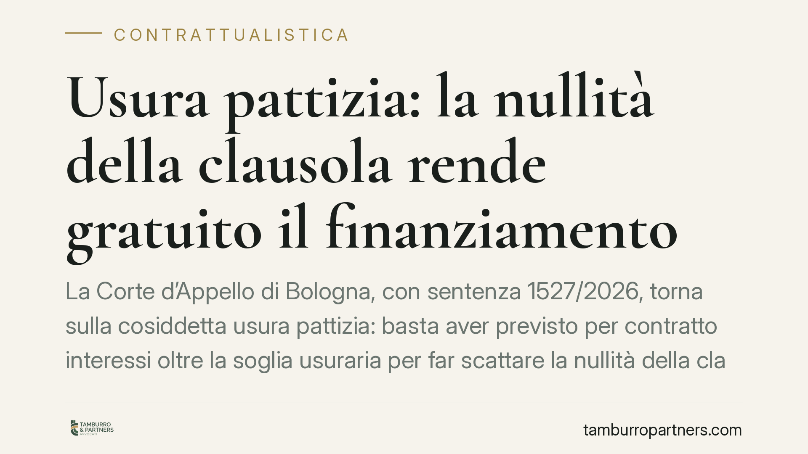

Usura pattizia: la nullità della clausola rende gratuito il finanziamento
La Corte d'Appello di Bologna, con sentenza 1527/2026, torna sulla cosiddetta usura pattizia: basta aver previsto per contratto interessi oltre la soglia usuraria per far scattare la nullità della clausola ex art. 1815, comma 2, c.c. Il finanziamento diventa così gratuito, a prescindere dal fatto che quei tassi siano stati concretamente applicati. Una pronuncia che incide su mutui e conti correnti.

Il caso
La controversia riguarda il rapporto tra un istituto di credito e una società di Parma. Al centro, la verifica del superamento del tasso soglia antiusura, calcolato periodicamente dal Ministero dell'Economia sulla base dei tassi medi di mercato rilevati dalla Banca d'Italia.
Il punto decisivo non è stato se la banca avesse incassato interessi usurari, ma se li avesse *pattuiti*. La Corte d'Appello di Bologna (sent. 1527/2026) ha ritenuto sufficiente la previsione contrattuale di tassi oltre soglia per dichiarare nulla la clausola sugli interessi.
Inquadramento normativo
L'articolo 1815, comma 2, del Codice civile è netto: "Se sono convenuti interessi usurari, la clausola è nulla e non sono dovuti interessi". La norma non parla di interessi *applicati*, ma di interessi *convenuti*. È su questo verbo che ruota l'intera decisione.
Il parametro per stabilire l'usura è l'art. 644 del Codice penale, che rinvia al meccanismo del tasso soglia. Quando la somma degli oneri pattuiti supera quel limite, la clausola è viziata alla radice.
La cosiddetta usura pattizia (o "originaria") si distingue dall'usura sopravvenuta, che riguarda tassi divenuti usurari solo dopo la stipula per effetto del calo delle soglie. Qui il vizio è presente fin dalla firma del contratto, e la sanzione civilistica scatta per il solo fatto della previsione, non per la sua esecuzione.
Implicazioni pratiche
La conseguenza è pesante. La nullità non colpisce l'intero contratto ma la sola clausola sugli interessi: il rapporto sopravvive, ma diventa a titolo gratuito. Il mutuatario restituisce il solo capitale; il correntista non deve gli interessi passivi pattuiti.
Per banche e intermediari il rischio è duplice. Da un lato, l'esposizione a domande di ripetizione delle somme già versate a titolo di interessi. Dall'altro, la perdita integrale della remunerazione sui finanziamenti interessati, con impatto diretto sui margini.
Per imprese e consumatori si apre invece uno spazio di tutela. Chi ha sottoscritto mutui o aperto conti correnti con clausole di interesse potenzialmente oltre soglia può far valere la nullità, anche se la banca sostiene di non aver mai applicato in concreto il tasso massimo previsto.
Va però usata prudenza. La materia resta tecnicamente complessa: il calcolo del superamento della soglia richiede la verifica di tutti gli oneri rilevanti (commissioni, spese, interessi di mora) e l'applicazione della soglia vigente al momento della pattuizione. Non tutte le clausole apparentemente elevate integrano usura, e la giurisprudenza non è uniforme. Resta inoltre la possibilità di ulteriori gradi di giudizio.
Cosa fare in concreto
- Recuperate la documentazione contrattuale completa: contratto di mutuo o di apertura di conto corrente, piano di ammortamento, fogli informativi e condizioni economiche applicate.
- Richiedete una perizia tecnica da parte di un consulente che ricostruisca il tasso effettivo globale pattuito e lo confronti con la soglia vigente alla data di stipula.
- Verificate i termini di prescrizione per l'eventuale azione di ripetizione delle somme già versate: i tempi variano a seconda della natura del rapporto e delle singole rimesse.
- Valutate l'intero quadro contrattuale prima di agire: la nullità della clausola interessi non estingue l'obbligo di restituzione del capitale.
- Confrontatevi con un professionista prima di sospendere pagamenti o inviare contestazioni, per evitare iniziative che possano esporre a segnalazioni o azioni esecutive.
Una pronuncia da leggere nel contesto
La sentenza bolognese si inserisce in un dibattito giurisprudenziale ancora aperto sulla rilevanza della pattuizione rispetto all'applicazione effettiva degli interessi. Non va letta come una regola generale e definitiva, ma come un orientamento autorevole di merito che offre argomenti concreti a chi contesta clausole di interesse potenzialmente usurarie.
Consigliamo a imprese e privati con rapporti bancari di lungo periodo di non sottovalutare la questione: una verifica tecnica preventiva permette di misurare la reale consistenza di un'eventuale pretesa prima di avviare qualsiasi iniziativa.
---
*Contributo informativo a cura di Tamburro & Partners - Avv. Giuseppe Tamburro. Non costituisce parere legale.*
Ogni contratto ha il suo equilibrio.
Se vuoi una revisione delle clausole o una redazione su misura, scrivi allo studio. Ti rispondiamo entro un giorno lavorativo.